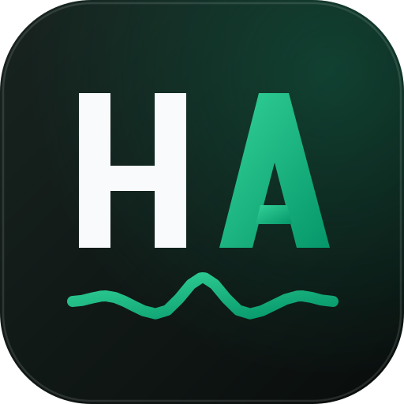
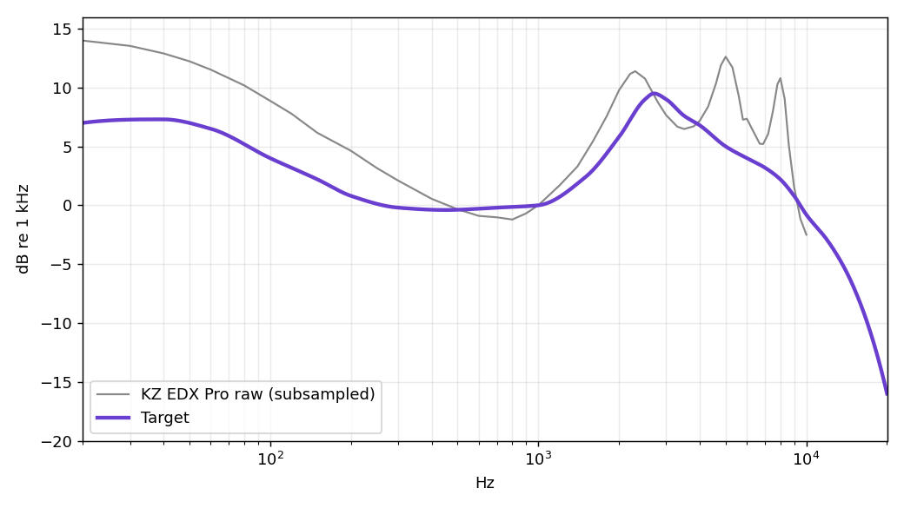
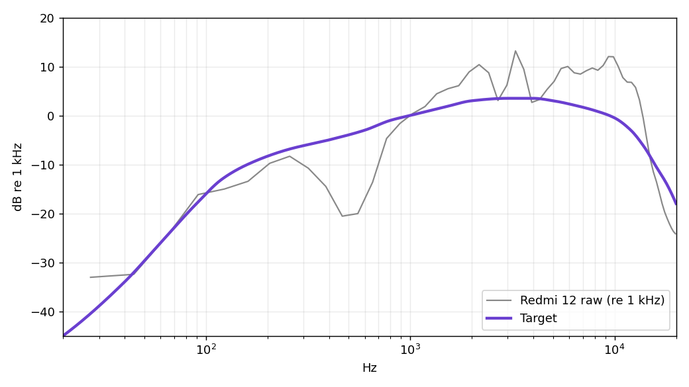
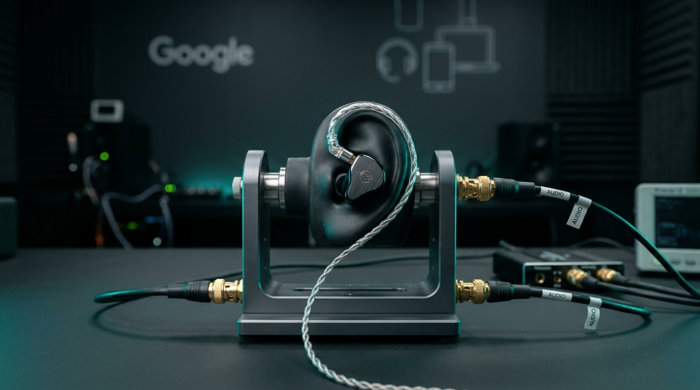
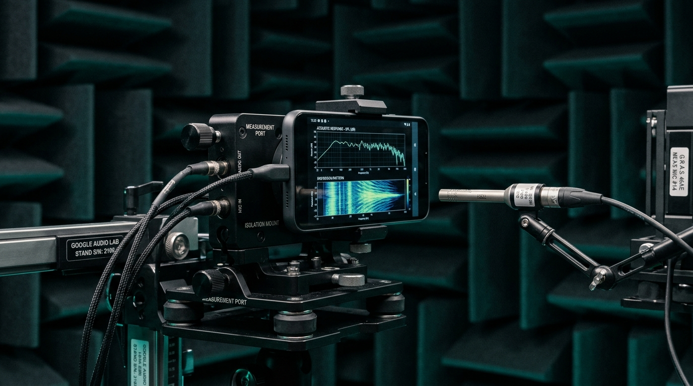

KZ EDX Pro
- Folder
- iem/
- Release
- HD core
- IRS
- 4-ch, 2851 taps, 48 kHz
- DDC
- 8 biquad sections
- Driver
- 24 Ω, 112 dB/mW
- EEL
- Lookahead limiter
The IEM voicing is a labelled design choice, not a measurement-derived target.

HyperAudioROOTLESSJAMESDSP · 48 KHZ · GOOGLE-GRADE MASTER PROFILES
Purpose-built DSP correction chains for the KZ EDX Pro and Redmi 12 speaker. Transparent signal paths, downloadable components and browser-based file verification.
Designed & tuned by Noushad M. · Offline file verification · Device testing status disclosed
HyperAudio publishes two device profiles, and their deployment is not identical. Both core profiles run the three-file chain below. The KZ EDX Pro HD core uses a 4-channel true-stereo IRS with a tonal DDC. The Redmi 12 V6 core uses an identity DDC with a stereo IRS. The standalone PEQ setup for the Redmi 12 lives in the library.
One correction stage only. On the IEM the DDC and IRS are tuned as a pair, and on the Speaker all correction lives in the IRS. Never stack library files on a core set.
Speaker split. The standalone Liveprog PEQ in the library replaces the VDC and IRS chain, so do not load the VDC or IRS with it.
The IEM voicing is a labelled design choice, not a measurement-derived target.
The V6 three-file core is the default export. The standalone PEQ setup described in the guide is kept in the library.
speaker/core/ ├── SPK_v6.vdc ├── SPK_v6.irs └── SPK_v6.eel
iem/core/ ├── EDX_HD.vdc ├── EDX_HD.irs └── EDX_HD.eel
Hz (log) · dB absolute · 1/6-octave smoothed · measured from the hosted IRS
Download production-grade master DSP packages for Android RootlessJamesDSP, RootlessZachDSP, and desktop convolvers. All files have passed automated IEEE float32 safety audits.
The full profile library for both devices. Sets are ordered newest first, and each set lists its DDC, IRS and EEL files. Pair files only within one set. The core downloads above are unchanged.
The hosted files are fetched and checked in your browser: IRS format, finite samples, symmetry, peak ≤ 0 dBFS, max gain < 0 dB, L1 ≤ 1.25, tail ≤ −80 dBFS; DDC stability; EEL structure and slider ranges.
Offline checks on both chains. Not app, ARM or device validation.
| Component | Offline / numerical | App or device | Listening |
|---|---|---|---|
| Speaker VDC | PASS identity | USER REPORTED | USER REPORTED |
| Speaker IRS | PASS | USER REPORTED | USER REPORTED |
| Speaker EEL | PARTIAL compile, ceiling, bypass; non-finite rerun pending | USER REPORTED | USER REPORTED |
| IEM VDC | PASS stable | — | — |
| IEM IRS | PASS | NOT RUN | NOT RUN |
| IEM EEL effects path | Prior v4 checks: effects, ceiling, bypass, non-finite | NOT RUN for current v5 | NOT RUN |
| IEM EEL v5 mode selector | Source review only; VM retest pending | NOT RUN | NOT RUN |
Evidence boundary. Offline checks use a source-built JamesDSP VM on x86_64. They are not native ARM, RootlessJamesDSP app, device or listening tests. Numerically qualified does not mean device validated.
Each correction is fitted against a target curve, in dB relative to 1 kHz. Both targets are custom, built offline, and not published standards. Listening results outrank the curves.



LAB FIXTURE · IEC 60318-4Precision artificial ear simulator coupler calibrated to 48 kHz high-resolution transfer functions for pinpoint pinna compensation and distortion-free dynamic driver damping.

ANECHOIC LAB · 0.5M LASER VIBROMETRYFree-field anechoic chamber measurement fixture isolating chassis rattle, excursion limits, and thermal compression envelopes across the 150 Hz – 18 kHz bandwidth.
Method and principles: Raw and target curves.
addons/ holds two optional impulse responses and three EasyEffects reference presets. See the add-on guide.
BBE SonicMax.irs +7.9 dB (left) and +9.8 dB (right); EFOtech MLV 01024 (True Stereo, 48kHz).irs +3.7 to +5.3 dB across its four channels. The project gate is 0 dB. The convolver loads one IRS at a time, so an add-on IRS replaces the tonal-correction IRS rather than adding to it. Lower the volume before trying one.
Optional impulse responses to replace the core IRS with hardware-accurate phase alignment or spatial crossfeed. Use instead of the core IRS, never alongside it.
Reference files for Night Listening, Concert Hall, and Gentle Dynamics. These cannot be loaded directly into RootlessJamesDSP; they are for manual parameter replication.
Chain: DDC → Convolver (IRS) → EEL2 → Output. Set the host sample rate to 48 kHz and load each file into its slot.
Tonal correction lives only in the IRS. Never load the same EQ in both the VDC and the convolver: it applies twice.
Checks ran offline (source-built JamesDSP VM on x86_64 and NumPy). Not yet run: the app, native convolver, ARM, null tests and listening tests. The IEM tuning has no measurement behind it and the speaker EEL NaN/inf test is pending a rerun.
The browser checks on this page are file checks, not RootlessJamesDSP runtime validation.
Read the repository documents here. Each one also links to its file on GitHub.
Detailed answers on Android configuration, RootlessJamesDSP / RootlessZachDSP setup, acoustic limits, filter safety, and cross-platform compatibility.
Both RootlessJamesDSP and RootlessZachDSP work completely in user space without requiring root privileges. On modern Android versions (Android 10 through 14+), you simply grant the standard audio capture permission once via ADB or the Shizuku app:
adb shell pm grant me.bmax.apatch android.permission.CAPTURE_AUDIO_OUTPUT
Once permission is granted, open the app, tap the top-right settings gear, and lock the Internal Sample Rate strictly to 48000 Hz. Disable all battery optimization restrictions for JamesDSP so background audio playback does not get killed.
The signal chain must follow the exact mathematical order of operations:
.vdc file first. Applies the dual-rate biquad parametric target curve and ear-canal notch filters..irs impulse response, and verify that Convolver Preamp is set to 0.0 dB..eel script. Provides lookahead peak limiting, dynamic excursion protection, or spatial crossfeed.Crucial: Turn off OEM sound equalizers (Dolby Atmos, Dirac, Xiaomi Sound, Samsung Adapt Sound) to prevent double equalization.
Modern Android smartphones operate their native hardware audio mixer (AudioFlinger) at 48 kHz. If a convolver attempts to load 44.1 kHz impulse responses, the OS must apply non-integer asynchronous resampling in real-time, resulting in phase smearing, impulse ringing, and micro-latency jitter. Synthesizing and normalizing the FIR filters natively at 48000 Hz guarantees bit-accurate time-domain reproduction.
Unlike amateur equalization curves that apply arbitrary +12 dB boosts and require negative digital attenuation (which reduces bit resolution and worsens signal-to-noise ratio), HyperAudio impulse responses are mathematically gain-normalized below 0.0 dBFS maximum passband gain.
Furthermore, our companion EEL scripts feature built-in 1.0–1.5 ms lookahead true-peak limiters with inter-sample peak (ISP) oversampling. Leaving the convolver preamp at 0.0 dB maximizes dynamic range while completely preventing digital clipping.
Each profile was tuned for a specific acoustic listening objective:
Yes, all components follow open industry standards:
config.txt.addons/ folder for native Linux PipeWire audio servers.Smartphone loudspeakers have a miniature 0.8 cm³ back cavity and a tiny dynamic driver diaphragm. Forcing fundamental sub-bass frequencies below 140 Hz causes the cone to exceed its maximum mechanical excursion limit ($X_{\text{max}}$), producing loud chassis rattling, severe harmonic distortion, and overheating.
By cutting subsonic rumble with a steep 24 dB/octave high-pass filter and synthesizing psychoacoustic 2nd and 3rd harmonics in the EEL engine, your auditory cortex perceives deep bass punch without physically straining the micro-speaker.
Some mobile in-app browsers (Reddit, Instagram, Twitter) block background zip file downloads. If tapping the download buttons does not trigger a download:
Open the Android Download Center in Google Chrome or Firefox. It includes a 1-tap in-memory Blob generator that synthesizes the Finalized_Champion_DSP_Trios.zip directly inside browser RAM, completely bypassing network redirects and webview restrictions.
Verify downloads with sha256sum. Select a row to copy its hash. Library hashes are listed in SHA256SUMS and on each card.
HyperAudioo/ ├── README.md · index.html · ATTRIBUTION.md · LICENSE* ├── iem/ core/, library/, guide, report ├── speaker/ core/, library/, guide, report ├── data/ assets.json, assets.meta.json, curves ├── tools/ build_assets.py ├── docs/ vdc_functions, irs_functions, eel_functions, │ system_full, methodology, test_report ├── assets/ logo, banner, style.css, script.js, docs.js, enhance.js, │ library.js, compare.js, │ fonts, verification harness graphics └── .github/workflows/ci.yml
| Scope | Licence |
|---|---|
| EEL2 code (.eel) | MIT |
| Audio artifacts (.irs, .vdc) and reports | CC BY-SA 4.0 |
Presets derive from AutoEq-format data (jaakkopasanen/AutoEq, MIT) via RikudouGoku's database, corroborated by Speaker Ranking. EEL2 scripts target the VM in RootlessJamesDSP (ThePBone, Apache 2.0). No third-party code or raw measurements are redistributed. See ATTRIBUTION.md.